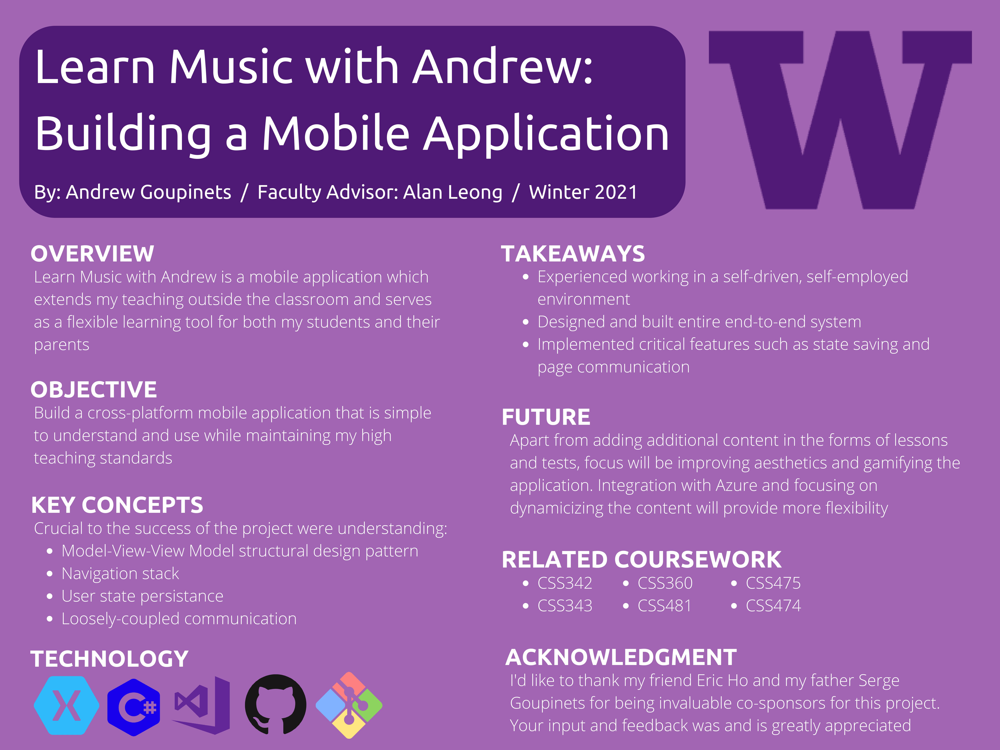

Division of Computing & Software Systems
March 19, 2021
Andrew Goupinets
Learn Music with Andrew: Building a Mobile Application
Individual Project - Student Defined
Advisor: Mr. Alan Leong
Abstract

View full-sized poster